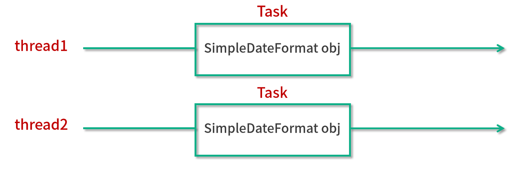
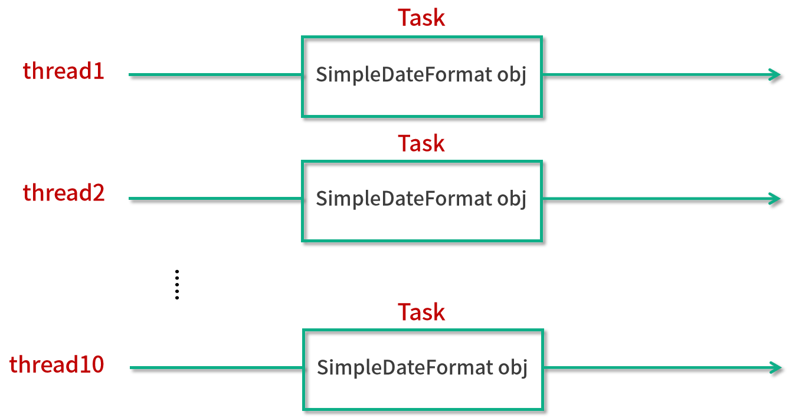
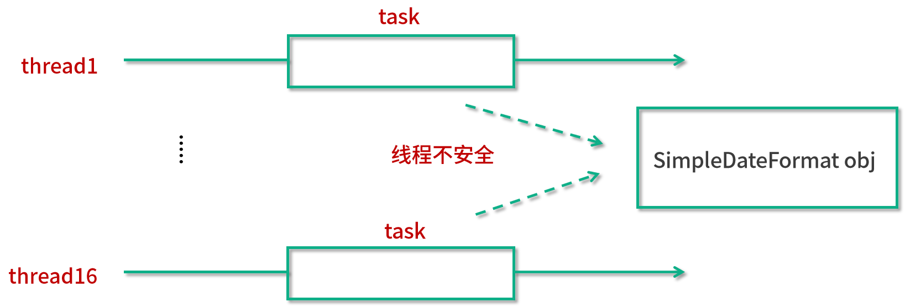
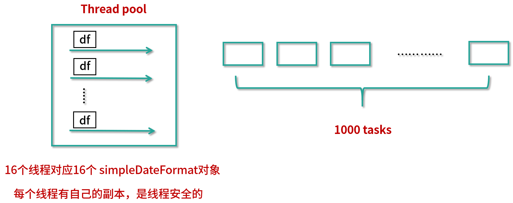
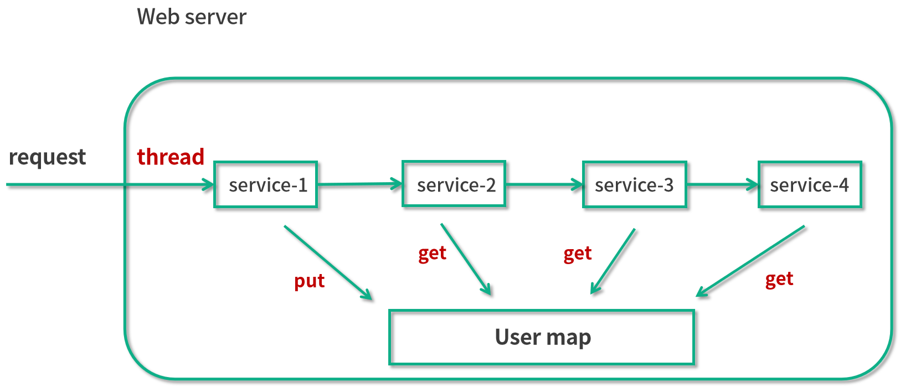
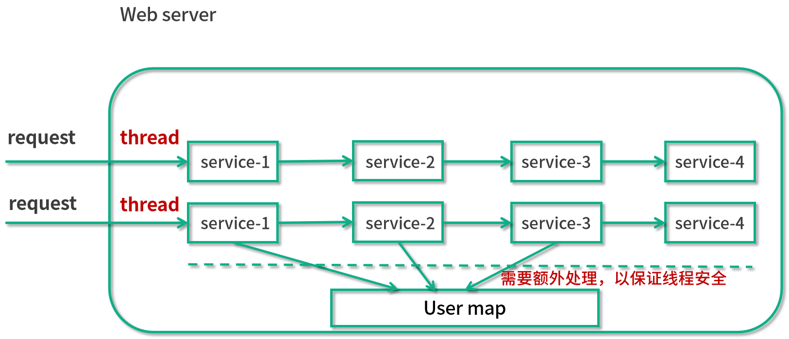
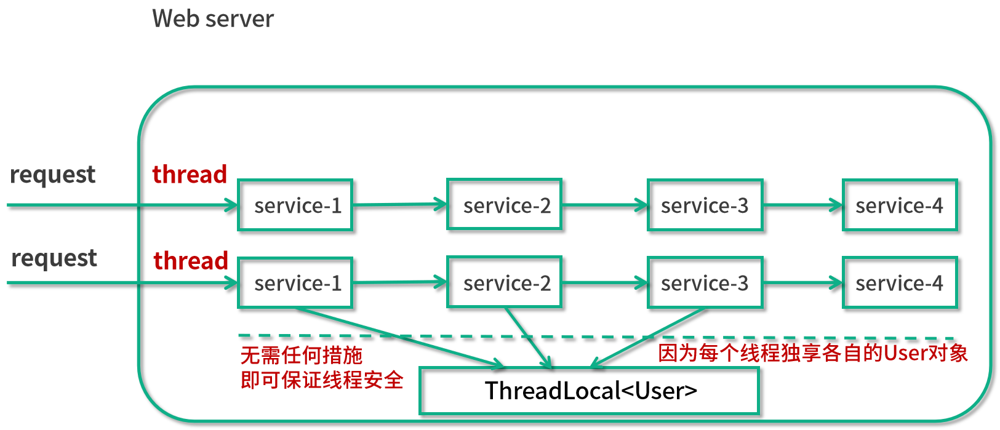

- 00 由点及面，搭建你的 Java 并发知识网.md.html
- 01 为何说只有 1 种实现线程的方法？.md.html
- 02 如何正确停止线程？为什么 volatile 标记位的停止方法是错误的？.md.html
- 03 线程是如何在 6 种状态之间转换的？.md.html
- 04 waitnotifynotifyAll 方法的使用注意事项？.md.html
- 05 有哪几种实现生产者消费者模式的方法？.md.html
- 06 一共有哪 3 类线程安全问题？.md.html
- 07 哪些场景需要额外注意线程安全问题？.md.html
- 08 为什么多线程会带来性能问题？.md.html
- 09 使用线程池比手动创建线程好在哪里？.md.html
- 10 线程池的各个参数的含义？.md.html
- 11 线程池有哪 4 种拒绝策略？.md.html
- 12 有哪 6 种常见的线程池？什么是 Java8 的 ForkJoinPool？.md.html
- 13 线程池常用的阻塞队列有哪些？.md.html
- 14 为什么不应该自动创建线程池？.md.html
- 15 合适的线程数量是多少？CPU 核心数和线程数的关系？.md.html
- 16 如何根据实际需要，定制自己的线程池？.md.html
- 17 如何正确关闭线程池？shutdown 和 shutdownNow 的区别？.md.html
- 18 线程池实现“线程复用”的原理？.md.html
- 19 你知道哪几种锁？分别有什么特点？.md.html
- 20 悲观锁和乐观锁的本质是什么？.md.html
- 21 如何看到 synchronized 背后的“monitor 锁”？.md.html
- 22 synchronized 和 Lock 孰优孰劣，如何选择？.md.html
- 23 Lock 有哪几个常用方法？分别有什么用？.md.html
- 24 讲一讲公平锁和非公平锁，为什么要“非公平”？.md.html
- 25 读写锁 ReadWriteLock 获取锁有哪些规则？.md.html
- 26 读锁应该插队吗？什么是读写锁的升降级？.md.html
- 27 什么是自旋锁？自旋的好处和后果是什么呢？.md.html
- 28 JVM 对锁进行了哪些优化？.md.html
- 29 HashMap 为什么是线程不安全的？.md.html
- 30 ConcurrentHashMap 在 Java7 和 8 有何不同？.md.html
- 31 为什么 Map 桶中超过 8 个才转为红黑树？.md.html
- 32 同样是线程安全，ConcurrentHashMap 和 Hashtable 的区别.md.html
- 33 CopyOnWriteArrayList 有什么特点？.md.html
- 34 什么是阻塞队列？.md.html
- 35 阻塞队列包含哪些常用的方法？add、offer、put 等方法的区别？.md.html
- 36 有哪几种常见的阻塞队列？.md.html
- 37 阻塞和非阻塞队列的并发安全原理是什么？.md.html
- 38 如何选择适合自己的阻塞队列？.md.html
- 39 原子类是如何利用 CAS 保证线程安全的？.md.html
- 40 AtomicInteger 在高并发下性能不好，如何解决？为什么？.md.html
- 41 原子类和 volatile 有什么异同？.md.html
- 42 AtomicInteger 和 synchronized 的异同点？.md.html
- 43 Java 8 中 Adder 和 Accumulator 有什么区别？.md.html
- 44 ThreadLocal 适合用在哪些实际生产的场景中？.md.html
- 45 ThreadLocal 是用来解决共享资源的多线程访问的问题吗？.md.html
- 46 多个 ThreadLocal 在 Thread 中的 threadlocals 里是怎么存储的？.md.html
- 47 内存泄漏——为何每次用完 ThreadLocal 都要调用 remove()？.md.html
- 48 Callable 和 Runnable 的不同？.md.html
- 49 Future 的主要功能是什么？.md.html
- 50 使用 Future 有哪些注意点？Future 产生新的线程了吗？.md.html
- 51 如何利用 CompletableFuture 实现“旅游平台”问题？.md.html
- 52 信号量能被 FixedThreadPool 替代吗？.md.html
- 53 CountDownLatch 是如何安排线程执行顺序的？.md.html
- 54 CyclicBarrier 和 CountdownLatch 有什么异同？.md.html
- 55 Condition、object.wait() 和 notify() 的关系？.md.html
- 56 讲一讲什么是 Java 内存模型？.md.html
- 57 什么是指令重排序？为什么要重排序？.md.html
- 58 Java 中的原子操作有哪些注意事项？.md.html
- 59 什么是“内存可见性”问题？.md.html
- 60 主内存和工作内存的关系？.md.html
- 61 什么是 happens-before 规则？.md.html
- 62 volatile 的作用是什么？与 synchronized 有什么异同？.md.html
- 63 单例模式的双重检查锁模式为什么必须加 volatile？.md.html
- 64 你知道什么是 CAS 吗？.md.html
- 65 CAS 和乐观锁的关系，什么时候会用到 CAS？.md.html
- 66 CAS 有什么缺点？.md.html
- 67 如何写一个必然死锁的例子？.md.html
- 68 发生死锁必须满足哪 4 个条件？.md.html
- 69 如何用命令行和代码定位死锁？.md.html
- 70 有哪些解决死锁问题的策略？.md.html
- 71 讲一讲经典的哲学家就餐问题.md.html
- 72 final 的三种用法是什么？.md.html
- 73 为什么加了 final 却依然无法拥有“不变性”？.md.html
- 74 为什么 String 被设计为是不可变的？.md.html
- 75 为什么需要 AQS？AQS 的作用和重要性是什么？.md.html
- 76 AQS 的内部原理是什么样的？.md.html
- 77 AQS 在 CountDownLatch 等类中的应用原理是什么？.md.html
- 78 一份独家的 Java 并发工具图谱.md.html
- 捐赠
44 ThreadLocal 适合用在哪些实际生产的场景中？
本课时主要介绍 ThreadLocal 适合用在哪些实际生产的场景中。
我们在学习一个工具之前，首先应该知道这个工具的作用，能带来哪些好处，而不是一上来就闷头进入工具的 API、用法等，否则就算我们把某个工具的用法学会了，也不知道应该在什么场景下使用。所以，我们先来看看究竟哪些场景下需要用到 ThreadLocal。
在通常的业务开发中，ThreadLocal 有两种典型的使用场景。
场景1，ThreadLocal 用作保存每个线程独享的对象，为每个线程都创建一个副本，这样每个线程都可以修改自己所拥有的副本, 而不会影响其他线程的副本，确保了线程安全。
场景2，ThreadLocal 用作每个线程内需要独立保存信息，以便供其他方法更方便地获取该信息的场景。每个线程获取到的信息可能都是不一样的，前面执行的方法保存了信息后，后续方法可以通过 ThreadLocal 直接获取到，避免了传参，类似于全局变量的概念。
典型场景1
这种场景通常用于保存线程不安全的工具类，典型的需要使用的类就是 SimpleDateFormat。
场景介绍
在这种情况下，每个 Thread 内都有自己的实例副本，且该副本只能由当前 Thread 访问到并使用，相当于每个线程内部的本地变量，这也是 ThreadLocal 命名的含义。因为每个线程独享副本，而不是公用的，所以不存在多线程间共享的问题。
我们来做一个比喻，比如饭店要做一道菜，但是有 5 个厨师一起做，这样的话就很乱了，因为如果一个厨师已经放过盐了，假如其他厨师都不知道，于是就都各自放了一次盐，导致最后的菜很咸。这就好比多线程的情况，线程不安全。我们用了 ThreadLocal 之后，相当于每个厨师只负责自己的一道菜，一共有 5 道菜，这样的话就非常清晰明了了，不会出现问题。
SimpleDateFormat 的进化之路
1. 2 个线程都要用到 SimpleDateFormat
下面我们用一个案例来说明这种典型的第一个场景。假设有个需求，即 2 个线程都要用到 SimpleDateFormat。代码如下所示：
public class ThreadLocalDemo01 {
public static void main(String[] args) throws InterruptedException {
new Thread(() -> {
String date = new ThreadLocalDemo01().date(1);
System.out.println(date);
}).start();
Thread.sleep(100);
new Thread(() -> {
String date = new ThreadLocalDemo01().date(2);
System.out.println(date);
}).start();
}
public String date(int seconds) {
Date date = new Date(1000 * seconds);
SimpleDateFormat simpleDateFormat = new SimpleDateFormat("mm:ss");
return simpleDateFormat.format(date);
}
}
在以上代码中可以看出，两个线程分别创建了一个自己的 SimpleDateFormat 对象，如图所示：

这样一来，有两个线程，那么就有两个 SimpleDateFormat 对象，它们之间互不干扰，这段代码是可以正常运转的，运行结果是：
00:01
00:02
2. 10 个线程都要用到 SimpleDateFormat
假设我们的需求有了升级，不仅仅需要 2 个线程，而是需要 10 个，也就是说，有 10 个线程同时对应 10 个 SimpleDateFormat 对象。我们就来看下面这种写法：
public class ThreadLocalDemo02 {
public static void main(String[] args) throws InterruptedException {
for (int i = 0; i < 10; i++) {
int finalI = i;
new Thread(() -> {
String date = new ThreadLocalDemo02().date(finalI);
System.out.println(date);
}).start();
Thread.sleep(100);
}
}
public String date(int seconds) {
Date date = new Date(1000 * seconds);
SimpleDateFormat simpleDateFormat = new SimpleDateFormat("mm:ss");
return simpleDateFormat.format(date);
}
}
上面的代码利用了一个 for 循环来完成这个需求。for 循环一共循环 10 次，每一次都会新建一个线程，并且每一个线程都会在 date 方法中创建一个 SimpleDateFormat 对象，示意图如下：

可以看出一共有 10 个线程，对应 10 个 SimpleDateFormat 对象。
代码的运行结果：
00:00
00:01
00:02
00:03
00:04
00:05
00:06
00:07
00:08
00:09
3. 需求变成了 1000 个线程都要用到 SimpleDateFormat
但是线程不能无休地创建下去，因为线程越多，所占用的资源也会越多。假设我们需要 1000 个任务，那就不能再用 for 循环的方法了，而是应该使用线程池来实现线程的复用，否则会消耗过多的内存等资源。
在这种情况下，我们给出下面这个代码实现的方案：
public class ThreadLocalDemo03 {
public static ExecutorService threadPool = Executors.newFixedThreadPool(16);
public static void main(String[] args) throws InterruptedException {
for (int i = 0; i < 1000; i++) {
int finalI = i;
threadPool.submit(new Runnable() {
@Override
public void run() {
String date = new ThreadLocalDemo03().date(finalI);
System.out.println(date);
}
});
}
threadPool.shutdown();
}
public String date(int seconds) {
Date date = new Date(1000 * seconds);
SimpleDateFormat dateFormat = new SimpleDateFormat("mm:ss");
return dateFormat.format(date);
}
}
可以看出，我们用了一个 16 线程的线程池，并且给这个线程池提交了 1000 次任务。每个任务中它做的事情和之前是一样的，还是去执行 date 方法，并且在这个方法中创建一个 simpleDateFormat 对象。程序的一种运行结果是（多线程下，运行结果不唯一）：
00:00
00:07
00:04
00:02
...
16:29
16:28
16:27
16:26
16:39
程序运行结果正确，把从 00:00 到 16:39 这 1000 个时间给打印了出来，并且没有重复的时间。我们把这段代码用图形化给表示出来，如图所示：

图的左侧是一个线程池，右侧是 1000 个任务。我们刚才所做的就是每个任务都创建了一个 simpleDateFormat 对象，也就是说，1000 个任务对应 1000 个 simpleDateFormat 对象。
但是这样做是没有必要的，因为这么多对象的创建是有开销的，并且在使用完之后的销毁同样是有开销的，而且这么多对象同时存在在内存中也是一种内存的浪费。
现在我们就来优化一下。既然不想要这么多的 simpleDateFormat 对象，最简单的就是只用一个就可以了。
4. 所有的线程都共用一个 simpleDateFormat 对象
我们用下面的代码来演示只用一个 simpleDateFormat 对象的情况：
public class ThreadLocalDemo04 {
public static ExecutorService threadPool = Executors.newFixedThreadPool(16);
static SimpleDateFormat dateFormat = new SimpleDateFormat("mm:ss");
public static void main(String[] args) throws InterruptedException {
for (int i = 0; i < 1000; i++) {
int finalI = i;
threadPool.submit(new Runnable() {
@Override
public void run() {
String date = new ThreadLocalDemo04().date(finalI);
System.out.println(date);
}
});
}
threadPool.shutdown();
}
public String date(int seconds) {
Date date = new Date(1000 * seconds);
return dateFormat.format(date);
}
}
在代码中可以看出，其他的没有变化，变化之处就在于，我们把这个 simpleDateFormat 对象给提取了出来，变成 static 静态变量，需要用的时候直接去获取这个静态对象就可以了。看上去省略掉了创建 1000 个 simpleDateFormat 对象的开销，看上去没有问题，我们用图形的方式把这件事情给表示出来：

从图中可以看出，我们有不同的线程，并且线程会执行它们的任务。但是不同的任务所调用的 simpleDateFormat 对象都是同一个，所以它们所指向的那个对象都是同一个，但是这样一来就会有线程不安全的问题。
5. 线程不安全，出现了并发安全问题
控制台会打印出（多线程下，运行结果不唯一）：
00:04
00:04
00:05
00:04
...
16:15
16:14
16:13
执行上面的代码就会发现，控制台所打印出来的和我们所期待的是不一致的。我们所期待的是打印出来的时间是不重复的，但是可以看出在这里出现了重复，比如第一行和第二行都是 04 秒，这就代表它内部已经出错了。
6. 加锁
出错的原因就在于，simpleDateFormat 这个对象本身不是一个线程安全的对象，不应该被多个线程同时访问。所以我们就想到了一个解决方案，用 synchronized 来加锁。于是代码就修改成下面的样子：
public class ThreadLocalDemo05 {
public static ExecutorService threadPool = Executors.newFixedThreadPool(16);
static SimpleDateFormat dateFormat = new SimpleDateFormat("mm:ss");
public static void main(String[] args) throws InterruptedException {
for (int i = 0; i < 1000; i++) {
int finalI = i;
threadPool.submit(new Runnable() {
@Override
public void run() {
String date = new ThreadLocalDemo05().date(finalI);
System.out.println(date);
}
});
}
threadPool.shutdown();
}
public String date(int seconds) {
Date date = new Date(1000 * seconds);
String s = null;
synchronized (ThreadLocalDemo05.class) {
s = dateFormat.format(date);
}
return s;
}
}
可以看出在 date 方法中加入了 synchronized 关键字，把 simpleDateFormat 的调用给上了锁。
运行这段代码的结果（多线程下，运行结果不唯一）：
00:00
00:01
00:06
...
15:56
16:37
16:36
这样的结果是正常的，没有出现重复的时间。但是由于我们使用了 synchronized 关键字，就会陷入一种排队的状态，多个线程不能同时工作，这样一来，整体的效率就被大大降低了。有没有更好的解决方案呢？
我们希望达到的效果是，既不浪费过多的内存，同时又想保证线程安全。经过思考得出，可以让每个线程都拥有一个自己的 simpleDateFormat 对象来达到这个目的，这样就能两全其美了。
7. 使用 ThreadLocal
那么，要想达到这个目的，我们就可以使用 ThreadLocal。示例代码如下所示：
public class ThreadLocalDemo06 {
public static ExecutorService threadPool = Executors.newFixedThreadPool(16);
public static void main(String[] args) throws InterruptedException {
for (int i = 0; i < 1000; i++) {
int finalI = i;
threadPool.submit(new Runnable() {
@Override
public void run() {
String date = new ThreadLocalDemo06().date(finalI);
System.out.println(date);
}
});
}
threadPool.shutdown();
}
public String date(int seconds) {
Date date = new Date(1000 * seconds);
SimpleDateFormat dateFormat = ThreadSafeFormatter.dateFormatThreadLocal.get();
return dateFormat.format(date);
}
}
class ThreadSafeFormatter {
public static ThreadLocal<SimpleDateFormat> dateFormatThreadLocal = new ThreadLocal<SimpleDateFormat>() {
@Override
protected SimpleDateFormat initialValue() {
return new SimpleDateFormat("mm:ss");
}
};
}
在这段代码中，我们使用了 ThreadLocal 帮每个线程去生成它自己的 simpleDateFormat 对象，对于每个线程而言，这个对象是独享的。但与此同时，这个对象就不会创造过多，一共只有 16 个，因为线程只有 16 个。
代码运行结果（多线程下，运行结果不唯一）：
00:05
00:04
00:01
...
16:37
16:36
16:32
这个结果是正确的，不会出现重复的时间。
我们用图来看一下当前的这种状态：

在图中的左侧可以看到，这个线程池一共有 16 个线程，对应 16 个 simpleDateFormat 对象。而在这个图画的右侧是 1000 个任务，任务是非常多的，和原来一样有 1000 个任务。但是这里最大的变化就是，虽然任务有 1000 个，但是我们不再需要去创建 1000 个 simpleDateFormat 对象了。即便任务再多，最终也只会有和线程数相同的 simpleDateFormat 对象。这样既高效地使用了内存，又同时保证了线程安全。
以上就是第一种非常典型的适合使用 ThreadLocal 的场景。
典型场景2
每个线程内需要保存类似于全局变量的信息（例如在拦截器中获取的用户信息），可以让不同方法直接使用，避免参数传递的麻烦却不想被多线程共享（因为不同线程获取到的用户信息不一样）。
例如，用 ThreadLocal 保存一些业务内容（用户权限信息、从用户系统获取到的用户名、用户ID 等），这些信息在同一个线程内相同，但是不同的线程使用的业务内容是不相同的。
在线程生命周期内，都通过这个静态 ThreadLocal 实例的 get() 方法取得自己 set 过的那个对象，避免了将这个对象（如 user 对象）作为参数传递的麻烦。
我们用图画的形式举一个实例：

比如说我们是一个用户系统。假设不使用 ThreadLocal，那么当一个请求进来的时候，一个线程会负责执行这个请求，然后这个请求就会依次调用 service-1()、service-2()、service-3()、service-4()，这 4 个方法可能是分布在不同的类中的。
在 service-1() 的时候它会创建一个 user 的对象，用于保存比如说这个用户的用户名等信息，后面 service-2/3/4() 都需要用到这个对象的信息，比如说 service-2() 代表下订单、service-3() 代表发货、service-4() 代表完结订单，在这种情况下，每一个方法都需要用户信息，所以就需要把这个 user 对象层层传递下去，从 service-1() 传到 service-2()，再从 service-2() 传到 service-3()，以此类推。
这样做会导致代码非常冗余，那有没有什么办法可以解决这个问题呢？我们首先想到的方法就是使用一个 HashMap，如下图所示： 
比如说我们使用了这样的 Map 之后，就不需要把 user 对象层层传递了，而是在执行 service-1() 的时候，把这个用户信息给 put 进去，然后后面需要拿用户信息的时候，直接从静态的 User map 里面 get 就可以了。这样一来，无论你执行哪个方法，都可以直接获取到这个用户信息。当然，我们也要考虑到 web 服务器通常都是多线程的，当多个线程同时工作的时候，我们也需要保证线程安全。
所以在这里，如果我们使用 HashMap 是不够的，因为它是线程不安全的，那我们就可以使用 synchronized，或者直接把 HashMap 替换成 ConcurrentHashMap，用类似的方法来保证线程安全，这样的改进如下图所示：

在这个图中，可以看出有两个线程，并且每个线程所做的事情都是访问 service-1/2/3/4()。那么当它们同时运行的时候，都会同时访问这个 User map，于是就需要 User map 是线程安全的。
无论我们使用 synchronized 还是使用 ConcurrentHashMap，它对性能都是有所影响的，因为即便是使用性能比较好的 ConcurrentHashMap，它也是包含少量的同步，或者是 cas 等过程。相比于完全没有同步，它依然是有性能损耗的。所以在此一个更好的办法就是使用 ThreadLocal。
这样一来，我们就可以在不影响性能的情况下，也无需层层传递参数，就可以达到保存当前线程所对应的用户信息的目的。如下图所示：

在这个图中可以看出，同样是多个线程同时去执行，但是这些线程同时去访问这个 ThreadLocal 并且能利用 ThreadLocal 拿到只属于自己的独享对象。这样的话，就无需任何额外的措施，保证了线程安全，因为每个线程是独享 user 对象的。代码如下所示：
public class ThreadLocalDemo07 {
public static void main(String[] args) {
new Service1().service1();
}
}
class Service1 {
public void service1() {
User user = new User("拉勾教育");
UserContextHolder.holder.set(user);
new Service2().service2();
}
}
class Service2 {
public void service2() {
User user = UserContextHolder.holder.get();
System.out.println("Service2拿到用户名：" + user.name);
new Service3().service3();
}
}
class Service3 {
public void service3() {
User user = UserContextHolder.holder.get();
System.out.println("Service3拿到用户名：" + user.name);
UserContextHolder.holder.remove();
}
}
class UserContextHolder {
public static ThreadLocal<User> holder = new ThreadLocal<>();
}
class User {
String name;
public User(String name) {
this.name = n
}
}
在这个代码中我们可以看出，我们有一个 UserContextHolder，里面保存了一个 ThreadLocal，在调用 Service1 的方法的时候，就往里面存入了 user 对象，而在后面去调用的时候，直接从里面用 get 方法取出来就可以了。没有参数层层传递的过程，非常的优雅、方便。
代码运行结果：
Service2拿到用户名：拉勾教育
Service3拿到用户名：拉勾教育
总结
下面我们进行总结。
本讲主要介绍了 ThreadLocal 的两个典型的使用场景。
场景1，ThreadLocal 用作保存每个线程独享的对象，为每个线程都创建一个副本，每个线程都只能修改自己所拥有的副本, 而不会影响其他线程的副本，这样就让原本在并发情况下，线程不安全的情况变成了线程安全的情况。
场景2，ThreadLocal 用作每个线程内需要独立保存信息的场景，供其他方法更方便得获取该信息，每个线程获取到的信息都可能是不一样的，前面执行的方法设置了信息后，后续方法可以通过 ThreadLocal 直接获取到，避免了传参。
© 2019 - 2023 Liangliang Lee. Powered by gin and hexo-theme-book.